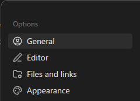
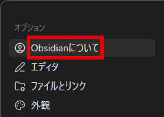
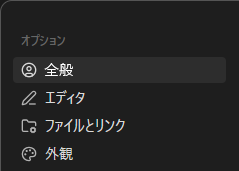
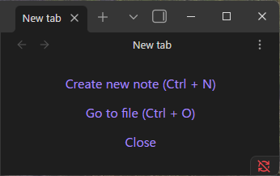
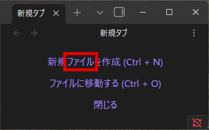
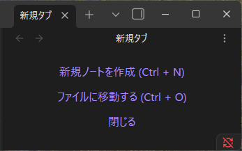
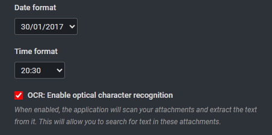
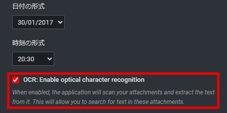
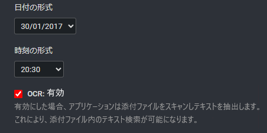

This portfolio showcases practical localization QA case studies based on publicly available user interfaces. Each example focuses on improving translation quality, context awareness, and user experience through Japanese UI review.
These independent case studies are based on publicly available interfaces of Obsidian and Joplin. This portfolio is intended solely for demonstration purposes and is not affiliated with or endorsed by the respective projects.
Real examples of localization issues identified during Japanese UI review.
This case examines the Japanese translation of the "General" settings category in Obsidian. Although the translation is grammatically correct, it does not accurately represent the purpose of the menu. As a result, users may mistake it for an About or version information page instead of the application's general settings.

The original English interface clearly indicates that this menu contains general application settings.

The label 「Obsidianについて」 is commonly interpreted as an About page rather than General Settings.

Replacing the label with 「全般」 better matches user expectations and aligns with common Japanese UI terminology.
The English label "General" is translated as 「Obsidianについて」, which Japanese users typically interpret as an About or version information page. The translation is grammatically correct, but it does not accurately represent the function of the settings category.
While exploring the Settings screen, I initially searched categories such as Appearance and Editor because I did not expect language settings to be located under 「Obsidianについて」. This translation increases cognitive load, slows navigation, and may confuse first-time users.
Replace 「Obsidianについて」 with 「全般」. This wording follows common Japanese UI conventions and more accurately communicates that the menu contains general application settings.
Users rely on menu labels to predict where settings are located. Even when a translation is grammatically correct, a misleading label reduces discoverability and negatively affects the overall user experience. This issue demonstrates why localization QA requires contextual understanding, not just literal translation.
According to the official Obsidian Help, "Notes in Obsidian are stored as plain text files." Throughout the product, Obsidian consistently uses the term "Note" to refer to the user's primary content. The Japanese translation should preserve this terminology consistently. Otherwise, users may become confused when different terms refer to the same concept.

The original English UI consistently uses the term "Note" throughout the application.

The label 「ファイル」 ("File") refers to the same concept as "Note", but using different terms for the same concept may confuse users.

The label 「ノート」 is the standard Japanese translation of "Note" and is used consistently throughout the application.
The English UI consistently uses the term "Note" throughout the application. However, one Japanese string translates it as 「ファイル」 ("File"), which breaks terminology consistency. Using different terms for the same concept may confuse users and reduce confidence in the interface.
Users may believe that "File" and "Note" refer to different concepts. The inconsistency also makes it harder to understand documentation, tutorials, and menu items that consistently use the term "Note."
Replace 「ファイル」 with 「ノート」 to match the terminology used throughout the rest of the application and maintain consistency across the UI.
Terminology consistency is one of the fundamental principles of localization QA. Even small wording differences can create uncertainty when the same concept appears throughout an application.
A localized interface should provide a fully translated user experience. Leaving settings untranslated can reduce usability and user confidence, particularly for users with limited English proficiency.

オリジナルの英文では、チェックボックスがOCRを有効にすることを表している。 またその後に、その機能の詳細について説明している。

チェックボックスの意味について、また提供される機能の詳細について、一切翻訳されていない。 "OCR"は日本語でもそのまま使われるので、英文を読もうとする一部のユーザーには理解される可能性もあるが、 多くのユーザーは読まずに諦めるだろう。

日本語に翻訳されているので、チェックボックスの意味、提供される機能についてすぐに理解できる。
The OCR setting and its description remain in English even when the application language is set to Japanese.
日本語に翻訳されているアプリケーションとそうでないアプリケーションがあるなら、多くのユーザーは翻訳されているものを選ぶ。 翻訳されていない個所を見つけた時点でユーザーは読解しようとはせず、諦めて別のアプリケーションを探しに行くだろう。
オリジナルの英文(1)を日本語(2)に翻訳。 日本語のUIの慣習に従い、チェックボックスの説明は明瞭・簡潔に、 有効にした場合に提供される機能については分かりやすく丁寧に説明する。
(1)
☑ OCR: Enable optical character recognition
When enabled, the application will scan your attachments and extract the text from it.
This will allow you to search for text in these attachments.
(2)
☑ OCR: 有効
有効にした場合、アプリケーションは添付ファイルをスキャンしテキストを抽出します。
これにより、添付ファイル内のテキスト検索が可能になります。
未翻訳はローカリゼーションQA以前の問題であり、あってはならない事象である。 日本語ユーザーが英文を読めないことは良くあることである。
Additional localization QA case studies currently in preparation.
Tone Consistency